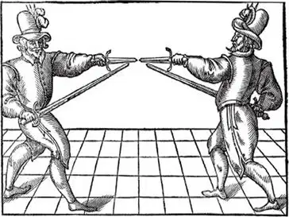
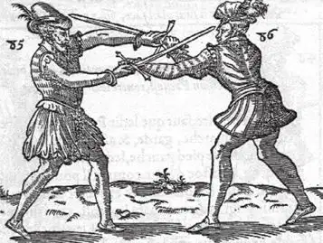

Introduction to The Tragedy of Hamlet, Prince of Denmark
The mood of Hamlet is set by its opening exchange: 'Who's there?' 'Nay, answer me.' The play creates the illusion of asking as many questions of its audience and interpreters as we may ask of it. Shakespeare won't tell us who he is or where he stands. Instead, he makes us — and our culture — reveal ourselves. That is the source of his endurance and one of the reasons why Hamlet has long been regarded as his greatest, or at least his most characteristic, play.
The Prince of Denmark himself is the most famously interrogative of all dramatic characters. He is Shakespeare's ultimate man of words. The actor who plays him has to learn over 340 speeches; the role has a higher proportion of its play's words (nearly forty per cent) than any other in Shakespeare. Hamlet's favourite intellectual move is to make an action that he witnesses — a player weeping, a skull tossed from an old grave — into the occasion for speculation: 'What's Hecuba to him, or he to Hecuba, / That he should weep for her?', 'Where be your gibes now, your gambols, your songs, your flashes of merriment that were wont to set the table on a roar?' In watching or reading the play, we are moved, like Hamlet, to ask the big questions: What should we believe? How should we act? What happens after death? Whose version of the truth should we have faith in?
Horatio, the commentator who comes closest to being the voice of the audience, says that he 'in part' believes stories about ghosts and portents. His qualifier is a watchword for the whole play. Humankind is in part a god-like creature, full of mental and verbal powers, 'The beauty of the world, the paragon of animals.' But, to take the other part, we are also 'quintessence of dust' — the politician, the lawyer, the heroic man of action (Alexander the Great) and the humble clown (Yorick) all end up in the same place.
Like the wood in A Midsummer Night's Dream , but with tragic as opposed to comic consequences, Elsinore is a place where 'everything seems double'. Rosencrantz and Guildenstern are a double act engaged to spy on Hamlet, with the result that he has 'at each ear a hearer'. Hardly anyone in the play seems able to speak without producing a double epithet: 'the sensible and true avouch / Of mine own eyes', 'the gross and scope of my opinion', 'post-haste and rummage in the land', 'the grace and blush of modesty', and so on. Stage props also come in pairs: two contrasting portraits of two brothers, a pair of rapiers (one of which is sharpened and anointed for the kill), two skulls. Entrances seem to repeat themselves: the appearances of the ghost; Hamlet overheard in meditation, first with a book, later with his reflections on being and not being; the king and Gertrude in their respective private rooms after the trauma of the Mousetrap play; Ophelia's two mad scenes.
The story of a son seeking vengeance for his father's death is doubled after Hamlet kills Polonius: 'by the image of my cause I see / The portraiture of his', remarks Hamlet of Laertes. The motif is redoubled in the figure of Young Fortinbras out to avenge the defeat of Old Fortinbras. A further commentary is provided by the Player's speech about Pyrrhus, son of Achilles, furiously seeking atonement for his father's loss by slaughtering old King Priam. But this might be construed as a negative example: Priam himself is an 'unnervèd father' and his slaughter moves a wife and mother, Hecuba, to distraction. If Hamlet were to become a killing machine like Pyrrhus, he would be diminishing himself to the inhumanity of his adversary, besides emotionally destroying his mother: that is his dilemma bounded in a nutshell.
Hamlet is a student, a model for the perpetual students and idealists who people later literature, especially in Germany and Russia. Like Shakespeare's other highly intellectual drama, Troilus and Cressida, this is a play that debates the great questions of epistemology, ethics and metaphysics. 'Humanism', the dominant educational theory of the sixteenth century, proposed that wisdom was to be derived from book learning. The student developed the arts of language through his rhetorical training, while collecting the wisdom of the ancients in the form of citations and sententiae copied into a commonplace book. Polonius' maxims on how Laertes should behave when away from home, climaxing in the cliché 'to thine own self be true', are classic examples. The art of 'reason' was refined through the study of 'common themes', one of which was 'death of fathers'. Reason and judgement were supposed to prevail over will and passion. The Stoicism of Seneca provided a model for the use of 'philosophy' as protection against the fickleness of fortune and the vicissitudes of court politics.
Hamlet's uncle must once have been a good student. He is a master of balanced rhetoric, the measure and decorum of his verse belying his crime against the order of nature and state. He thinks he knows, and that everyone in the court will accept, what is the appropriate length of time to mourn the death of a brother, husband, father. Hamlet despises such propriety. He is not interested in the 'common' way of behaving. He speaks for the 'particular', the individual. 'Mourning duties', maintained for a set period, are to him mere outward show, the signs of a 'seeming' with which he refuses to play along. He has 'that within which passeth show': the solitary self is set against social custom. He has returned from university determined to 'wipe away' all the customary wisdom of Stoic decorum, all that 'discourse of reason' which humanist theorists regarded as the gift that set men above the beasts. He will have nothing to do with 'saws of books' or the codes of behaviour that 'youth and observation' are supposed to copy from their humanist texts. After encountering the ghost, he vows to fill his commonplace book ('my tables') from experience instead of books. This new way of seeing is initially regarded by his fellow-students Horatio and Marcellus as no more than 'wild and whirling words', madness brought on by an encounter with an evil spirit. But Hamlet knows what he is doing. He tries on his 'antic disposition' as a way of testing the limits of the rational 'philosophy' embodied by Horatio. Ophelia tells of how she witnessed Hamlet utter a sigh that seemed to 'end his being'. That end is also a beginning: the birth of a new man dedicated to the proposition that the opposite of reason is not madness, but true feeling. Later, when Ophelia is mad, she is described as 'Divided from herself and her fair judgement, / Without the which we are pictures or mere beasts.' When Hamlet feigns madness, by contrast, he speaks with true judgement, as even Polonius half-recognizes: 'A happiness that often madness hits on, which reason and sanity could not so prosperously be delivered of.'
Hamlet is a political drama as well as a play about the journey of an individual self. It begins with portents betokening 'some strange eruption to our state'. It holds up a mirror to a world of royalty, courtiers, politicians and ambassadors, but also ordinary people: students, actors, gravediggers, even (on the margins) an underclass of 'landless resolutes' following Fortinbras and a 'rabble' who want Laertes to be king. 'Denmark's a prison': Hamlet is cabined, cribbed and confined by his princely birth, by the machinations of statecraft, and by the limitations of the material world. In his melancholy, when he complains that he has lost interest in all gentlemanly pursuits ('custom of exercise'), he points to the 'canopy' over the stage. The self-conscious allusion to the architecture of the Globe theatre hints at how he finds his freedom: in play, first by pretending to be mad, then through theatre. It is the arrival of the actors that reinvigorates him. Hamlet loves plays and the players because he recognizes the power of acting to expose the feigning of public life, the fact that courtiership and rhetorical decorum are themselves but performances. He comes to the truth through 'a fiction' and 'a dream of passion'. In this he can only be regarded as an apologist for the art of his creator.
Hamlet's shortest soliloquy, after he has been fired up by the play-within-the-play, is very much in the style of the traditional stage revenger, such as Hieronimo in Thomas Kyd's Spanish Tragedy : 'Now could I drink hot blood / And do such bitter business as the day / Would quake to look on.' Hamlet is as capable of violent action as any other revenger — witness his cruel rejection of Ophelia and his casual lugging of Polonius' guts into the neighbouring room. Nor does he delay nearly so much as he tells us he is delaying. He has to establish the authenticity of the ghost, to ensure that it is not a devil sent to tempt him into evil action, and as soon as he has done this by watching Claudius' reaction to the play he goes off to kill him; he doesn't kill him at prayer because that would be 'hire and salary, not revenge', would send him to heaven not to hell; he then thinks that he has killed him in Gertrude's closet; it turns out that he has killed Polonius instead and as a result he is packed off to England. As soon as he has tricked and dispatched Rosencrantz and Guildenstern, effected his daring escape via the pirate ship and returned to Denmark, he is in a state of 'readiness' and the revenge takes place during the duel.
But the style of the 'hot blood' soliloquy is completely unlike that of the other solo speeches, which are all much longer and more introspective. It is from them that we derive our image of the character of Hamlet: in the first act, so disgusted by his mother's hasty remarriage that he wishes he were dead; in the second, moved to self-disgust by the way in which the player can work himself into a frenzy for the fictional sorrows of Hecuba, while he himself has not yet done anything about his father's murder; in the third, meditating on the pros and cons of suicide; and in the Quarto text of the fourth, still chiding himself when he compares his own inaction with the military activity of Fortinbras and his army ('How all occasions do inform against me / And spur my dull revenge!'). Hamlet's self-analysis has led some commentators to wonder whether his failure to kill the praying usurper might be the result of procrastination, not calculation about whether he would be sending him to heaven or hell. The soliloquies present such a convincing picture of irresolution and inaction that even when it comes to the final scene it may occur to us that the killing of the king seems to be not so much the climax of Hamlet's plans as an incidental consequence of Laertes' quest for revenge for the deaths of his father and sister.
For the Romantics such as Goethe and Coleridge, Hamlet was the archetype of the sensitive man paralysed into inaction by his sheer capacity for thought — which is to say an image of themselves as poets uneasily inhabiting the public sphere. Debatable as this reading is, there can be little doubt that Shakespeare's innovation in Hamlet was to take the figure of the revenger from the old play and turn him into an intellectual, so making revenge into a moral dilemma as opposed to a practical task to be carried out through effective plotting. Hamlet's problem is that his intelligence makes him see both sides of every question, whereas there is no place for debate and half-measure in the drama of revenge. The lesson from both the Old Testament and Greek tragedy, which was mediated to Shakespeare via Seneca's Latin versions, was that action requires reactions: a crime in one generation demands the meting out of punishment in the next, an eye for an eye. Requital must be exact and complete. Hamlet does not kill the king while he is praying because that would send him straight to heaven, which does not correspond to the fate of Old Hamlet, who was murdered 'grossly, full of bread, / With all his crimes broad blown.' It is one of the play's many ironies that, immediately on Hamlet's departure, the king acknowledges that his prayer for forgiveness is not working — if Hamlet had struck, he would have damned his enemy.
One of the paradoxes of the play is that the ghost of Old Hamlet comes from Purgatory, where he is confined in fire 'Till the foul crimes done in his days of nature / Are burnt and purged away', while Hamlet's speech giving his reasons for not plunging his sword into his praying uncle implies that the act of penitence can instantly purge sin away and allow even a man who has committed the most terrible crime immediate access to heaven on his death. Purgatory is a Roman Catholic doctrine, the leap to grace supposed by Hamlet a Protestant one. At several points, the play engages with the great doctrinal disputes of the Reformation and Counter-Reformation. Hamlet, after all, longs to be back at Wittenberg, Martin Luther's university, intellectual home of the Protestant revolution, in which authenticity of feeling is paramount and the key term is 'conscience'. As Hamlet says at the end of 'To be, or not to be', 'conscience does make cowards of us all'. In Elizabethan English, 'conscience' means not only moral scruple but also 'consciousness'. A polyglot dictionary of the period glosses the word as 'witness of one's own mind, knowledge, remorse'. It is Hamlet's extreme self-consciousness that sets him apart from the traditional revenger. When alone on stage, reflecting on his own situation, he seems to embody the very nature of human being ; it is 'conscience' in its multiple senses that forms his self-image, his 'character', and in so doing makes it agonizingly difficult for him to perform the action that is demanded of him. Yet when he does come to act, he is decisive and ruthless. He reaches the point of 'readiness' when he accepts — never easy for an intellectual — that what will be will be. Thereafter, he considers it 'perfect conscience' to kill the king and has no compunction about his treatment of the former schoolfellows who have betrayed not only him but the precious virtue of friendship: Rosencrantz and Guildenstern, he says, 'are not near my conscience'.
It is sometimes said that chance, not Hamlet, brings the plot to a resolution. Hamlet certainly believes that Providence is operating on his behalf, as witnessed by the good fortune of his having the means to seal Rosencrantz and Guildenstern's fate. But the exchange of rapiers during the fencing match with Laertes is not a matter of chance, as is sometimes suggested. Many modern productions use the épée that had not been invented in Shakespeare's time — a flexible foil that may be knocked from the hand, leading to the possibility of an accidental exchange of weapons. But Hamlet and Laertes duel with 'rapier and dagger', the commonest weapons for such an encounter, as illustrated in Vincentio Saviolo's treatise on fencing skills, The Art of Practice (1595). The grip used for the rapier meant that it was very hard to remove it from the opponent's hand save by an advanced manoeuvre known as the 'left-hand seizure': Hamlet would have dropped his dagger to the ground and grabbed the hilt of Laertes' rapier with his left hand, twisting it out of his grip; Laertes would have responded with the same action, resulting in the switch of weapons.
The move, which is illustrated in continental fencing handbooks of the period, is so skilful that Hamlet's action must have been purposeful. He would not initially have seen that Laertes' rapier was 'unbated' (not blunted in the way that was customary to prevent the injury of gentlemen participating in sporting fights), but on receiving a 'hit' his skin would have been pierced by the point. Realizing that Laertes is in earnest, not play, he instantly responds with the manoeuvre that makes the switch. Now he is in deadly earnest himself. Deeds take over from words, revenge is performed without further compunctious visitings of nature, and 'the rest is silence'.

'Rapier and dagger': on-guard position, as illustrated in Vincentio Saviolo's English fencing treatise of 1595

'They change rapiers': disarm and exchange by left-hand seizure, as illustrated in Henri de Saint-Didier's French fencing treatise of 1573
KEY FACTS
PLOT: Old Hamlet, King of Denmark, is dead and has been succeeded by his brother. The new king has also married Gertrude, the widowed queen. Hamlet, Gertrude's son, is already distressed by his father's death and the hasty remarriage; when his father's ghost appears to tell him that he was murdered by his own brother, Hamlet vows revenge. To cover his intentions, he feigns madness. Polonius, councillor to the court, whose daughter Ophelia is all but betrothed to Hamlet, believes that his madness is caused by love. Spied on by Polonius and the king, Hamlet encounters Ophelia and violently rejects her. A company of actors arrives and Hamlet asks them to perform a play, hoping that its similarity to the murder of his own father will force the king to reveal his guilt. Hamlet's suspicions are confirmed. He visits his mother, reviling her for her hasty marriage, and accidentally kills Polonius, who is hiding in the chamber. The king sends Hamlet to England, planning to have him murdered. Laertes, Polonius' son, demands revenge for his father's death. His sister, Ophelia, maddened by grief, has drowned. Hamlet returns and confronts Laertes at her funeral. The king, meanwhile, has plotted with Laertes to kill Hamlet in a fencing match in which Laertes will have a poisoned sword. The plot miscarries and Laertes dies. Gertrude drinks from a poisoned cup intended for Hamlet, and also dies. Hamlet, wounded by the poisoned sword, kills the king before he, too, dies. Young Fortinbras of Norway arrives and lays claim to the throne of Denmark.
MAJOR PARTS: (with percentage of lines/number of speeches/scenes on stage ) Hamlet (37%/341/12), King (14%/100/11), Polonius (9%/86/8), Horatio (7%/105/9), Laertes (5%/60/6), Ophelia (4%/58/5), Gertrude (4%/70/10), Rosencrantz (2%/44/6), First Player (2%/8/2), Ghost (2%/15/2), First Clown (2%/34/1), Marcellus (2%/34/4), Guildenstern (1%/29/5), Osric (1%/19/1).
LINGUISTIC MEDIUM: 75% verse, 25% prose.
DATE: 1600? Not mentioned by Meres in 1598; registered for publication in summer 1602.Allusions to Julius Caesar (1599) in the dialogue suggest that it was performed after that play; a reference to Shakespeare's Hamlet by the Cambridge academic Gabriel Harvey seems to date from before February 1601. The exchange concerning boy-actors alludes to rivalries in the London theatres during 1600 and 1601, but it may have been inserted in the play some time after its original composition (the passage is absent from the Second Quarto text). An old Hamlet play, of unknown authorship and now lost, was extant in the late 1580s to mid-1590s; it is not known whether Shakespeare had any direct involvement with it.
SOURCES: Given the frequency with which Shakespeare reworked old plays, it may be assumed that the old Hamlet play was his chief source. The Danish prince Amleth is a revenger in the twelfth-century Historiae Danicae of Saxo Grammaticus, familiar to Elizabethan readers via a retelling in François de Belleforest's Histoires tragiques (1570). In Belleforest, the Gertrude figure definitely begins her affair with her husband's brother before the murder, in which she is suspected of complicity. The Player's speech on the fall of Troy is influenced by the language of Christopher Marlowe's Dido Queen of Carthage ; Hamlet's philosophizing sometimes resembles the tone of Michel de Montaigne's Essais , but a direct link has not been proved.
TEXT: The First Quarto was published in 1603 under the title The Tragicall Historie of HAMLET Prince of Denmarke by William Shakespeare. As it hath beene diuerse times acted by his Highnesse seruants in the Cittie of London: as also in the two Vniuersities of Cambridge and Oxford, and elsewhere . Much shorter than the later texts, and with many garbled lines, it seems to be a reconstruction of an acting version. There are some notable differences from the later texts (e.g. Polonius called Corambis, 'To be or not to be' and the 'nunnery' dialogue positioned with the 'fishmonger' exchange, not after the arrival of the players), but some of the stage directions are valuable (e.g. 'Enter Ofelia playing on a Lute, and her haire downe singing ' for the mad scene). The Second Quarto, published in 1604/05, was clearly an 'authorized' text, intended to displace the First Quarto, as may be seen from its title-page claim, 'Newly imprinted and enlarged to almost as much againe as it was, according to the true and perfect Coppie.' Most scholars believe that the text derives from Shakespeare's manuscript; over 4000 lines long, it is unlikely to have been staged in full. The text in the 1623 Folio seems to have been set from the theatre promptbook or a transcript of it. It has much fuller stage directions than the Second Quarto, and considerable textual variations: about 70 new lines are present, while about 230 Quarto lines are absent, including the whole of Hamlet's last major soliloquy, 'How all occasions do inform against me' — in Folio, he is not there to witness Fortinbras' army. Hundreds of individual readings differ, strongly suggesting that the Second Quarto and Folio represent different stages in the play's life. Some scholars regard the revision as systematic (e.g. making subtle changes to Hamlet's relationship with Rosencrantz and Guildenstern), but it may have been more incremental and haphazard. Given the major differences, the editorial practice of conflation, which began with Nicholas Rowe's insertion of the Second Quarto's final soliloquy in his Folio-based text of 1709, has recently fallen into disrepute. We edit the Folio text, but include the Quarto-only passages (edited and annotated) independently at the end. Though Folio seems to have been set from a theatrical manuscript, it was also influenced by the Quarto tradition; so too, a modern edition of Folio can benefit from Quarto readings when the Folio text is manifestly erroneous, as it is on numerous occasions.